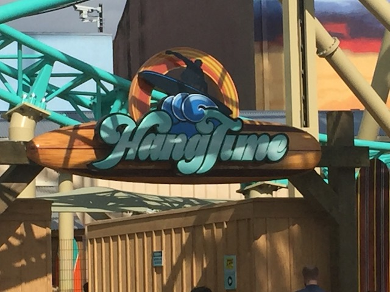
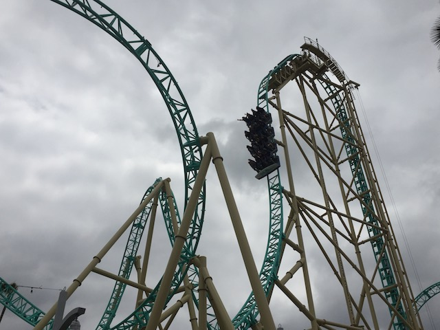
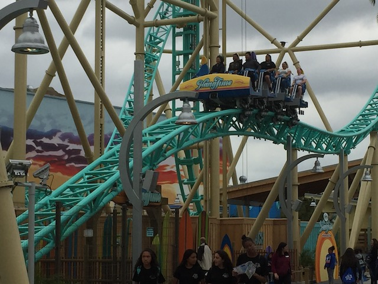
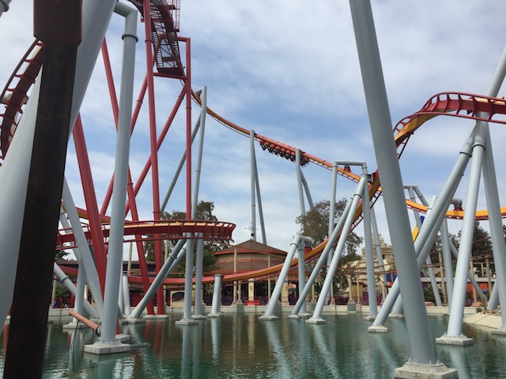
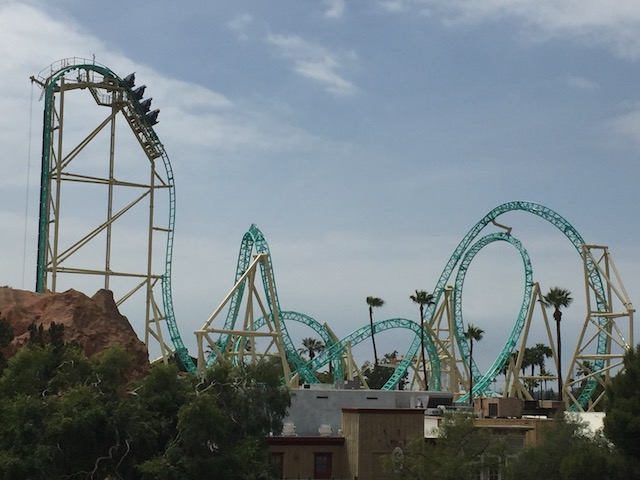
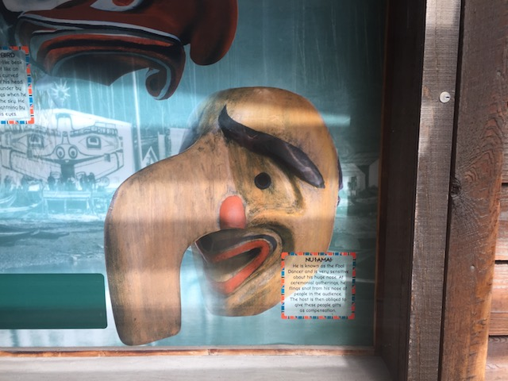
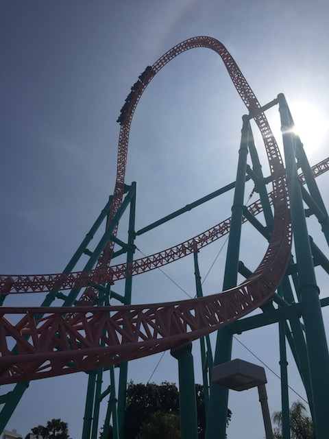
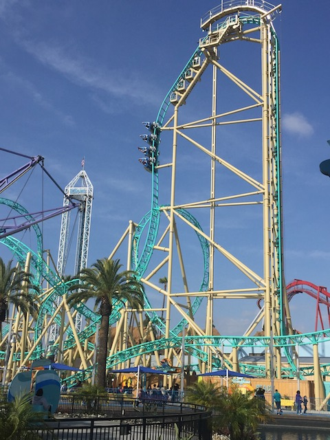

| |
HangTime Opening Day
All right. A brand new coaster has opened up in Southern California, and of course, we have to check it out. Yep. HangTime has officially opened up at Knotts Berry Farm, and we're here on Opening Day. I know that we normally will wait till the end of summer and then lump all of our summer visits into one big Summer Update. But HangTime is a major coaster, and I do not want to have to wait several months before I talk about HangTime on Incrediblecoasters. So I'm doing a special update dedicated to this cool new Eurofighter (I know it's technically not a Eurofighter, but come on. It's a Gerslauter beyond vertical drop coaster). And hey, the park is handing out these HangTime brocures.

Yep. That's why I'm here.
 All right. That's enough chit chat. How's HangTime?
All right. That's enough chit chat. How's HangTime?

Well, I go into more details in my just published at the same time as this update, HangTime Review, but I will say this. HangTime is a very fun ride. =)
 Honestly, compared to other Eurofighters (I'm still calling it one, despite it being an "Infinity Coaster", those basically are Eurofighters), it's up there. Fluch von Novgorod is still without a doubt, and by far, the best Eurofighter. Then, it's a close call between this and Mystery Mine. If you stripped Mystery Mine of all its theming and just laid it bare naked in a parking lot, Six Flags style, HangTime would easily be better. Though thanks to all the cool theming Dollywood puts on it, I'd still call it 2nd best, with HangTime coming in a close 3rd best.
Honestly, compared to other Eurofighters (I'm still calling it one, despite it being an "Infinity Coaster", those basically are Eurofighters), it's up there. Fluch von Novgorod is still without a doubt, and by far, the best Eurofighter. Then, it's a close call between this and Mystery Mine. If you stripped Mystery Mine of all its theming and just laid it bare naked in a parking lot, Six Flags style, HangTime would easily be better. Though thanks to all the cool theming Dollywood puts on it, I'd still call it 2nd best, with HangTime coming in a close 3rd best.
Ooh. I wonder what they're gonna put there since HangTime is offically open. Probably more generic path stuff. But still interesting seeing construction walls still up when the ride is now open (Granted, it is opening day. They'll probably be down soon).
 I know I've recently been comparing HangTime to the other Eurofighters. But in all honesty, the ride it reminds me the most of, is Cannibal. This ride honestly to me, kind of feels like a minature version of Cannibal, only without a couple of the cool elements. So yeah. It's not as good as Cannibal, but it still gave off a very similar vibe to Cannibal. And considering how much I love Cannibal, that is a good thing. =)
I know I've recently been comparing HangTime to the other Eurofighters. But in all honesty, the ride it reminds me the most of, is Cannibal. This ride honestly to me, kind of feels like a minature version of Cannibal, only without a couple of the cool elements. So yeah. It's not as good as Cannibal, but it still gave off a very similar vibe to Cannibal. And considering how much I love Cannibal, that is a good thing. =)

There's actually a nice little pop of airtime right there. I liked that.
And hey. We bumped into some out of state friends today. So we might as well go and have lunch at Mrs. Knotts with them.

I know this is the HangTime Update, but belive it or not, we actually rode other rides as well today. ;)

Don't worry HangTime. We know that this update is all about you. =)
We decided to do something different this visit and check out the Mystery Lodge.

Pay no attention to the big nosed wooden man. He does nothing but feed you LIES!!! >=(

Just cause this is the HangTime update doesn't mean that it's the best ride in the park. No. Xcelerator is still, without a doubt, the best coaster at Knotts Berry Farm.

But seriously, HangTime is a fun ride. It won't blow you away, but it's a solid coaster that pretty much was exactly what I expected.
Come on! Snap those flyers Evan!
Ooh. HangTime reflection.
 I know a certain someone with us who is happy that we're riding the Schwarzkoph today. ;)
I know a certain someone with us who is happy that we're riding the Schwarzkoph today. ;)
And finally, after a fun day at Knotts, checking out a cool brand new coaster in SoCal, might as well end the night with a Korean BBQ.
Korean BBQ is good, and so is HangTime. An excellent addition to Knotts Berry Farm, and I look foreward to riding a lot more this summer. Now go out to Knotts Berry Farm and check out HangTime. =)
Home
|